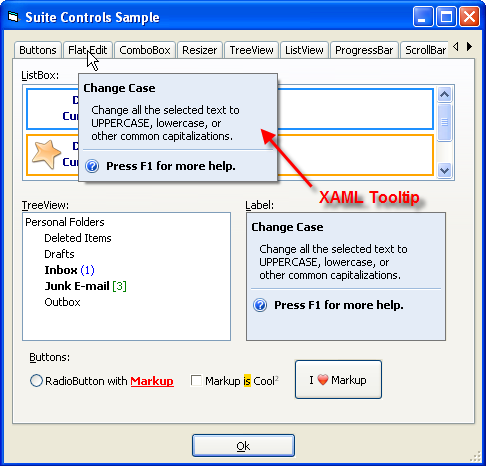

XTPToolTipStyle Enumeration (XtremeDockingPane)
| Xtreme Docking Pane ActiveX Control v15.3 |
Specifies the style of the tool tip when it is displayed.
| Member | Description |
|---|---|
| xtpToolTipStandard | Tool tips will use the Standard window style. The tool tips window will be in the shape of a rectangle with a solid dark border around it. |
| xtpToolTipBalloon | Tool tips will use the Balloon window style. The tool tip window will be in the shape of a balloon. |
| xtpToolTipOffice | Tool tips will use the Office window style. The tool tips window will be in the shape of a rectangle with a dark border on the right and bottom sides and a light border on the top and left sides. |
| xtpToolTipRTF | Tool tips will use the Rich-Text Format (RTF) window style. The tool tips window will be in the shape of a rectangle with a solid dark border around it. If the text stored in the title property is in RTF format, the tool tip will be displayed using the RTF formatting. This includes font, font size, color, bullets, etc. |
| xtpToolTipLuna | ToolTips will use the Windows Xp Luna color gradient as the back color of the tooltip window. The color depends on the appearance style of the operating system. |
| xtpToolTipResource | Tooltip will use the Office 2007 window style. |
| xtpToolTipHTML | Tooltip will use HTML formatting to format the tooltip.
This allows you to insert HTML objects such as tables or use HTML formatting such as font, bold, etc. |
| xtpToolTipMarkup | Tooltip will use XAML MarkUp formatting to format the tooltip. See this sample. |
The text that is stored in the title property will be displayed in the tool tip window.
Requirements:
The xtpToolTipBalloon XTPToolTipStyle requires Internet Explorer 5.0 or above to be installed. The IsBalloonStyleSupported method can be used to determine if the xtpToolTipBalloon style is supported.
XAML Tooltips:
Only controls with a TooltipContext property can use Markup for tooltips. The sample below shows a TabControl that uses Markup tooltip, in this case, the second tab's tooltip is being set. Note EnableMarkup is not needed to enable Markup for the toolip. The style of the tooltip must be set to xtpToolTipMarkup. To display both a Markup Tooltip and Markup in the caption on the TabControl tabs both EnableMarkup and xtpToolTipMarkup are required. The xtpToolTipMarkup style is required to display Markup tooltips for the TabControl (or any other TooltipContext enabled control). Note the sample used images stored in a ImageManager as the image source.
The sample below will use XAML to create a tooltip for a tab button in a TabControl.

[XAML Tooltip (Visual Basic)] This sample shows how to use XAML MarkUp for a ToolTip.
'VB 6 code snippet |